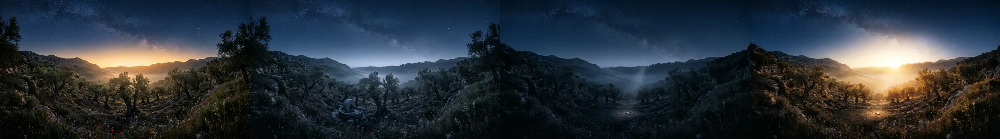

Phase I
The Threshold of Goodness
God Is Good
Even when it was difficult, Jesus still called Him Father because He is good.
We begin with songs about who God is: good.
Before the garden is trust.
The theme anchors everything we do.
The WX theme helps create room to Engage God, Behold Him and Be Transformed.
Every Worship Experience theme creates a new experience; it is never merely a repeat of the previous year.
The theme shapes the songs, the design, the whole flow.
The theme becomes the ground on which He works among His people.
At Worship Experience 2026 on
Our desire is simple but weighty: every heart would come to its own Gethsemane moment — where our preference meets His purpose, and our true answer becomes clear again.
4 Phases, Many Songs, One Destination
Discover our Journey of Songs

Even when it was difficult, Jesus still called Him Father because He is good.
We begin with songs about who God is: good.
Before the garden is trust.
We shift to the oil press. Like Jesus, strengthened by an angel, we are never alone — the Holy Spirit never leaves. We'll sing about the help He provides.
You are not alone in the weight.
This is our climax. No performance. No triumphant shout. Just a trembling heart, and a cup we wish would pass — but we say Yes, and sing songs of our yes.
Not my will, but His will be done.
Surrender is never the end of the story.
The will laid down, the Father is lifted high.
Glory is what obedience becomes.